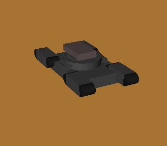
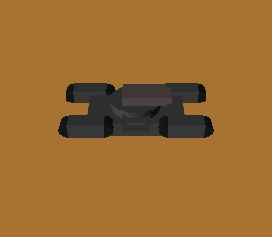

We extended the previous animator project, therefore this program is written in C++ and animator-related knowledge is still needed.
Knowledge of particle systems and mechanical physics is necessary, and a grasp of basic fluid dynamics is useful.
To simulate realistic particle movements during an explosion, we first created a pressure distribution in the region of the explosion, then applied a bouyancy force based off the pressure distribution to the particles in the explosion's vicinity.
The pressure simulation was calculated using the Navier-Stokes equations, which describe the motion of fluid substances. . The main equation we used was for modeling incompressable fluid flows:
This equation can be broken down as follows:
The first term is the divergence of the velocity field times the pressure, which illustrates that the pressure moves along with the fluid. The second term is the diffusion constant times the pressure acceleration vector, which means the pressure diffuses over time. Finally the S means that if this point is a "source", somewhere that adds or removes pressure, then it is also included. Thus, we can accurately model the pressure with an iterative solver that diffuses it, advects it, and adds source pressure at every timestep.
We utilized a couple of techniques to make the particles render more realistically. Although we did not use temperature in calculating the expansion of the particles, we changed the color of the particles to be a function of the amount of pressure (and correspondingly temperature) - the higher the pressure the brighter the color. This is rather simple but realistic substitution since it accounts for the illumination at the center of the explosion and the cooling of the particles as they move outwards. We also made the particles more transparent as their lifetime expired to simulate them burning and disappearing. And lastly, towards the end of their lifetime, we made them black to model the transformation into soot.
On the left is the original artifact from our animator project. The middle is the same animation using our new explosions. The right is a closeup of an explosion.
 Many other explosion systems do the rendering without particles, but instead raytrace through the density distribution and add illumination in the middle. This ends up looking better than ours. Additionally, many modern explosion techniques do more than just simulate the pressure expansion. Some cool ones we could incorporate would be thermal expansion and vorticity particles.
The idea of the pressure solver came from this paper, and we implemented a fairly similar version:
Real-Time Fluid Dynamics For GamesWe also read these papers and got the general idea of using pressure simulation from all of them.
A Vortex Particle Method for Smoke, Water and Explosions